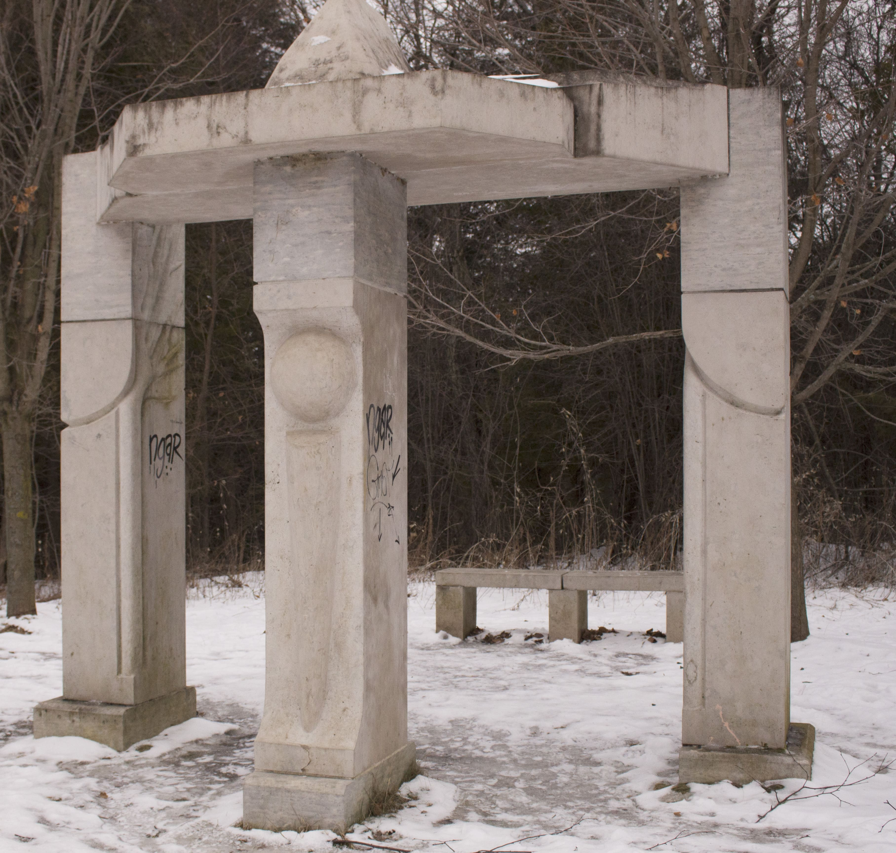
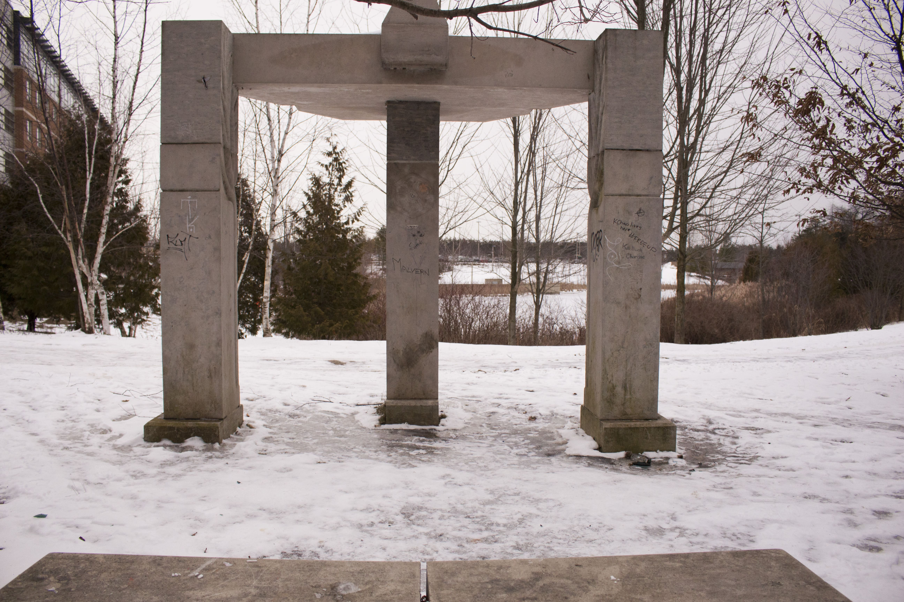

The Portal, one of the more interactive pieces on campus, sits just south of the South Village Residence next to the hiking trail. Reminiscent of Ancient Greece, the piece features two main components: a three-columned ‘portal’ and a bench, which sits just behind it.
The structure was constructed using stone and steel by artist Ronald Peters and received an honourable mention in the 19th Annual Uxbridge Juried Art Show in 2015.
